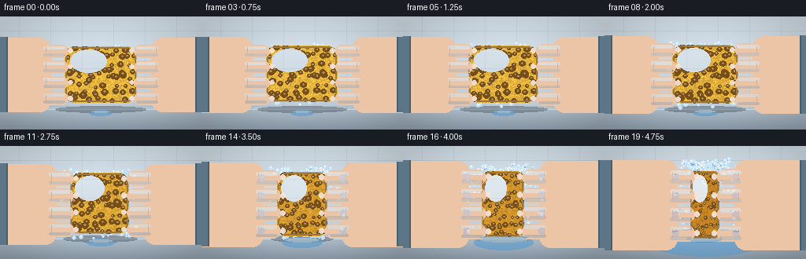
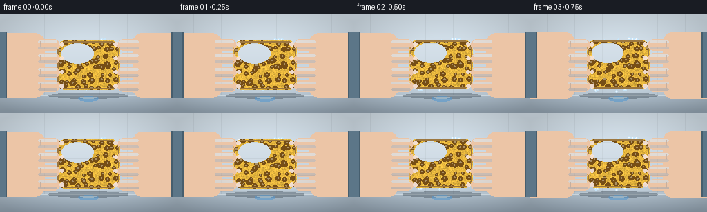

CODING AGENTS AS PIXEL WORLD MODELS
traex/Seed-2.1-Pro-0915 · phygen_011
点击播放 · 原生 RGB 像素
逐轮保存的候选
回放视频、检查图与代码变化。
每份候选均可单独播放。实际图片检查记录在下方工具轨迹中。
候选 01播放与检查图
点击播放 · 原生 RGB 像素


展开代码变化
--- 上一保存版本
+++ 本次保存版本
@@ -0,0 +1,359 @@
+#!/usr/bin/env python3
+"""Timelapse of a water-filled sponge forcefully squeezed by two hands.
+
+Pure numpy/PIL rendering: deforming porous sponge, pressing hands, a gravity
+water particle system, and a growing countertop puddle. Deterministic.
+"""
+import json
+import math
+from pathlib import Path
+
+import numpy as np
+from PIL import Image, ImageDraw
+
+import artifact_io
+
+CASE = Path(__file__).parent
+spec = json.loads((CASE / "task_spec.json").read_text())
+W, H, N, FPS = spec["width"], spec["height"], spec["frames"], spec["fps"]
+
+rng = np.random.default_rng(11)
+
+# ----------------------------------------------------------------------
+# Static texture assets
+# ----------------------------------------------------------------------
+# Pore layout in normalized sponge coordinates (0..1 on both axes).
+pores = []
+GRID = 8
+for gy in range(GRID):
+ for gx in range(GRID):
+ fx = (gx + 0.5) / GRID + (rng.random() - 0.5) * 0.09
+ fy = (gy + 0.5) / GRID + (rng.random() - 0.5) * 0.09
+ pores.append((fx, fy, 0.026 + rng.random() * 0.030))
+for _ in range(16): # a few bigger pores
+ pores.append((rng.random(), rng.random(), 0.042 + rng.random() * 0.028))
+
+# Fixed noise field so the sponge surface texture sticks to the material
+# while the block deforms.
+noise_field = rng.normal(0.0, 1.0, (96, 96))
+noise_img = Image.fromarray(np.uint8(np.clip(128 + noise_field * 22, 0, 255)))
+
+SKIN = (236, 197, 166)
+SKIN_SHADE = (206, 158, 124)
+SKIN_LIGHT = (248, 222, 200)
+NAIL = (246, 228, 218)
+CUFF = (92, 118, 136)
+WATER = (96, 168, 222)
+WATER_HEAD = (198, 230, 252)
+
+
+def lerp(a, b, t):
+ return a + (b - a) * t
+
+
+def lerp_color(c1, c2, t):
+ return tuple(int(round(lerp(c1[k], c2[k], t))) for k in range(3))
+
+
+# ----------------------------------------------------------------------
+# Background: tiled wall + countertop
+# ----------------------------------------------------------------------
+def render_background():
+ top = np.array([216, 228, 237], dtype=float)
+ bottom = np.array([190, 205, 217], dtype=float)
+ wall = np.zeros((118, W, 3), dtype=float)
+ for y in range(118):
+ wall[y, :, :] = top * (1 - y / 118) + bottom * (y / 118)
+ # Faint tile grout lines on the wall.
+ for ty in range(18, 118, 24):
+ wall[ty:ty + 1, :, :] *= 0.94
+ for tx in range(24, W, 40):
+ wall[:, tx:tx + 1, :] *= 0.95
+
+ counter = np.zeros((H - 118, W, 3), dtype=float)
+ ctop = np.array([178, 194, 207], dtype=float)
+ cbot = np.array([148, 164, 178], dtype=float)
+ for y in range(counter.shape[0]):
+ counter[y, :, :] = ctop * (1 - y / counter.shape[0]) + cbot * (
+ y / counter.shape[0]
+ )
+ img = np.vstack([wall, counter]).astype(np.uint8)
+ pil = Image.fromarray(img, "RGB").convert("RGBA")
+ d = ImageDraw.Draw(pil)
+ d.line([(0, 118), (W, 118)], fill=(214, 226, 234, 255))
+ # Gentle vignette darkening the frame edges.
+ yy, xx = np.mgrid[0:H, 0:W]
+ dist = np.sqrt(((xx - W / 2) / (W / 2)) ** 2 +
+ ((yy - H / 2) / (H / 2)) ** 2)
+ factor = np.clip(1.0 - 0.16 * np.maximum(dist - 0.55, 0.0) / 0.75,
+ 0.84, 1.0)
+ arr = np.asarray(pil, dtype=float)
+ arr[..., 0:3] *= factor[..., None]
+ pil = Image.fromarray(arr.astype(np.uint8), "RGBA")
+ return pil
+
+
+BACKGROUND = render_background()
+
+
+# ----------------------------------------------------------------------
+# Sponge
+# ----------------------------------------------------------------------
+def render_sponge(cx, cy, bw, bh, e):
+ """Render the sponge in its own cropped RGBA image, ready to paste."""
+ bw, bh = max(20, int(round(bw))), max(20, int(round(bh)))
+ radius = max(6, int(min(bw, bh) * 0.18))
+ mask = Image.new("L", (bw, bh), 0)
+ ImageDraw.Draw(mask).rounded_rectangle(
+ [0, 0, bw - 1, bh - 1], radius=radius, fill=255
+ )
+
+ # Wet sponge deepens in color as it is compressed.
+ base_color = lerp_color((230, 182, 62), (198, 132, 34), e)
+ arr = np.zeros((bh, bw, 4), dtype=np.uint8)
+ arr[..., 0:3] = base_color
+ arr[..., 3] = 255
+ n = np.asarray(noise_img.resize((bw, bh), Image.Resampling.BILINEAR),
+ dtype=float)
+ shade = np.clip(1.0 + (n - 128) / 255.0 * 1.5, 0.82, 1.16)
+ arr[..., 0:3] = np.clip(arr[..., 0:3] * shade[..., None], 0, 255).astype(
+ np.uint8
+ )
+ crop = Image.fromarray(arr, "RGBA")
+ d = ImageDraw.Draw(crop)
+
+ # Pores warp with the block.
+ for fx, fy, pr in pores:
+ px, py = fx * bw, fy * bh
+ rr = pr * min(bw, bh)
+ d.ellipse(
+ [px - rr, py - rr * 0.9, px + rr, py + rr * 0.9],
+ fill=(118, 78, 22, 255),
+ )
+ d.ellipse(
+ [px - rr * 0.25, py - rr * 0.4, px + rr * 0.25, py + rr * 0.05],
+ fill=(158, 112, 42, 170),
+ )
+
+ # Wet glossy sheen, stronger as water is driven to the surface.
+ d.ellipse(
+ [bw * 0.08, bh * 0.06, bw * 0.58, bh * 0.46],
+ fill=(255, 255, 255, int(34 + 78 * e)),
+ )
+ d.rounded_rectangle(
+ [1, 1, bw - 2, bh - 2],
+ radius=radius,
+ outline=(146, 98, 28, 210),
+ width=2,
+ )
+ return Image.composite(crop, Image.new("RGBA", (bw, bh), (0, 0, 0, 0)),
+ mask), (int(cx - bw / 2), int(cy - bh / 2))
+
+
+# ----------------------------------------------------------------------
+# Hands pressing inward from both screen edges
+# ----------------------------------------------------------------------
+def draw_hand(canvas, side, edge_x, cy, span, e):
+ """side = -1: hand enters from the left; side = +1: from the right."""
+ layer = Image.new("RGBA", (W, H), (0, 0, 0, 0))
+ d = ImageDraw.Draw(layer)
+ palm_w = 30
+ n_fingers = 4
+ gap = 4
+ fh = (span - gap * (n_fingers - 1)) / n_fingers
+ tip_x = edge_x - side * 4 # fingertips bite slightly into sponge
+ outer_x = edge_x + side * palm_w
+ x0, x1 = sorted((tip_x, outer_x))
+
+ # Forearm running off-screen.
+ arm_y0, arm_y1 = cy - span * 0.62, cy + span * 0.62
+ if side < 0:
+ d.rounded_rectangle([-12, arm_y0, outer_x + 12, arm_y1],
+ radius=14, fill=SKIN)
+ d.rectangle([-12, arm_y0, 8, arm_y1], fill=CUFF)
+ d.line([(8, arm_y0), (8, arm_y1)], fill=(70, 94, 110), width=2)
+ else:
+ d.rounded_rectangle([outer_x - 12, arm_y0, W + 12, arm_y1],
+ radius=14, fill=SKIN)
+ d.rectangle([W - 8, arm_y0, W + 12, arm_y1], fill=CUFF)
+ d.line([(W - 8, arm_y0), (W - 8, arm_y1)], fill=(70, 94, 110),
+ width=2)
+
+ for i in range(n_fingers):
+ y0 = cy - span / 2 + i * (fh + gap)
+ y1 = y0 + fh
+ d.rounded_rectangle([x0, y0, x1, y1], radius=fh / 2, fill=SKIN)
+ # Top light and bottom shade give the fingers volume.
+ d.rounded_rectangle(
+ [x0 + 3, y0 + 2, x1 - 4, y0 + fh * 0.32],
+ radius=fh * 0.16, fill=SKIN_LIGHT + (120,),
+ )
+ d.rounded_rectangle(
+ [x0 + 3, y1 - fh * 0.3, x1 - 4, y1 - 2],
+ radius=fh * 0.15, fill=SKIN_SHADE + (110,),
+ )
+ # Fingernail near the pressing tip.
+ nx = edge_x - side * 7
+ d.ellipse([nx - 3, y0 + fh * 0.32, nx + 3, y0 + fh * 0.68],
+ fill=NAIL + (235,))
+ # Knuckle crease toward the palm.
+ kx = outer_x - side * 6
+ d.line([(kx, y0 + fh * 0.25), (kx, y1 - fh * 0.25)],
+ fill=SKIN_SHADE + (150,), width=1)
+
+ # Pressure flush on the knuckles grows with effort.
+ if e > 0.35:
+ for i in range(n_fingers):
+ y0 = cy - span / 2 + i * (fh + gap)
+ kx = outer_x - side * 10
+ d.ellipse(
+ [kx - 4, y0 + fh * 0.3, kx + 4, y0 + fh * 0.7],
+ fill=(226, 150, 130, int(90 * e)),
+ )
+ canvas.alpha_composite(layer)
+
+
+# ----------------------------------------------------------------------
+# Water particle system
+# ----------------------------------------------------------------------
+particles = [] # dicts: x, y, vx, vy, size, life
+puddle_water = 6.0 # initial tiny puddle seed
+
+
+def spawn_water(sponge, e, u):
+ cx, cy, sw, sh = sponge
+ left, right = cx - sw / 2, cx + sw / 2
+ top, bot = cy - sh / 2, cy + sh / 2
+ # Jets escaping through the top and bottom faces (hands block the sides).
+ n_top = int(2 + 17 * e)
+ for _ in range(n_top):
+ fx = rng.random()
+ particles.append({
+ "x": lerp(left + 4, right - 4, fx),
+ "y": top + rng.random() * 3,
+ "vx": (fx - 0.5) * 1.4 + (rng.random() - 0.5) * 0.5,
+ "vy": -(1.1 + 3.4 * e) * (0.55 + rng.random() * 0.75),
+ "size": 1 + rng.random() * 1.6,
+ "life": 40,
+ })
+ n_bot = int(1 + 9 * e)
+ for _ in range(n_bot):
+ fx = rng.random()
+ particles.append({
+ "x": lerp(left + 4, right - 4, fx),
+ "y": bot - rng.random() * 3,
+ "vx": (fx - 0.5) * 0.6 + (rng.random() - 0.5) * 0.4,
+ "vy": (0.5 + 1.8 * e) * (0.6 + rng.random() * 0.6),
+ "size": 1 + rng.random() * 1.8,
+ "life": 40,
+ })
+ # Small leaks squeezing out past the fingertips.
+ n_side = int(7 * e)
+ for _ in range(n_side):
+ side = -1 if rng.random() < 0.5 else 1
+ fy = rng.random()
+ particles.append({
+ "x": (left if side < 0 else right) + side * 2,
+ "y": lerp(top + 3, bot - 3, fy),
+ "vx": side * (0.9 + 2.6 * e) * (0.6 + rng.random() * 0.7),
+ "vy": (rng.random() - 0.5) * 0.8,
+ "size": 1 + rng.random() * 1.3,
+ "life": 40,
+ })
+
+
+def update_and_draw_water(canvas):
+ global puddle_water
+ layer = Image.new("RGBA", (W, H), (0, 0, 0, 0))
+ d = ImageDraw.Draw(layer)
+ survivors = []
+ for p in particles:
+ p["vy"] += 0.18 # gravity
+ px, py = p["x"], p["y"]
+ p["x"] += p["vx"]
+ p["y"] += p["vy"]
+ p["life"] -= 1
+ if p["y"] >= 118: # lands on the countertop
+ puddle_water += 1.0
+ continue
+ if not (-6 <= p["x"] <= W + 6) or p["life"] <= 0:
+ continue
+ w = max(1, int(round(p["size"])))
+ d.line([(px, py), (p["x"], p["y"])],
+ fill=WATER + (185,), width=w)
+ r = p["size"]
+ d.ellipse([p["x"] - r, p["y"] - r, p["x"] + r, p["y"] + r],
+ fill=WATER_HEAD + (225,))
+ d.ellipse(
+ [p["x"] - r * 0.45, p["y"] - r * 0.45,
+ p["x"] + r * 0.1, p["y"] + r * 0.1],
+ fill=(255, 255, 255, 200),
+ )
+ survivors.append(p)
+ particles[:] = survivors
+
+ # Puddle on the countertop.
+ rx = min(78.0, 9.0 + puddle_water * 0.85)
+ ry = rx * 0.24
+ d.ellipse([128 - rx, 123 - ry, 128 + rx, 123 + ry],
+ fill=(86, 152, 206, 150))
+ d.ellipse([128 - rx * 0.8, 123 - ry * 0.85, 128 + rx * 0.8,
+ 123 - ry * 0.1],
+ fill=(190, 224, 244, 120))
+ canvas.alpha_composite(layer)
+
+
+# ----------------------------------------------------------------------
+# Frame loop
+# ----------------------------------------------------------------------
+frames = []
+diag = []
+for i in range(N):
+ u = i / (N - 1)
+ e = u ** 2.2 # pressure intensifies rapidly
+
+ # Sponge geometry: narrow under compression, bulge vertically.
+ sw = 92 * (1 - 0.60 * e)
+ sh = 72 * (1 + 0.32 * e - 0.12 * e * e)
+ cx = 128 + math.sin(u * 30.0) * 1.1 * e
+ cy = 74 + math.cos(u * 25.0) * 1.3 * e
+ left, right = cx - sw / 2, cx + sw / 2
+
+ frame = BACKGROUND.copy()
+
+ # Contact shadow on the counter.
+ shadow = Image.new("RGBA", (W, H), (0, 0, 0, 0))
+ sd = ImageDraw.Draw(shadow)
+ sd.ellipse([cx - sw * 0.62, 114, cx + sw * 0.62, 122],
+ fill=(40, 52, 62, 90))
+ frame.alpha_composite(shadow)
+
+ # Water released this frame, then integrated and drawn.
+ spawn_water((cx, cy, sw, sh), e, u)
+
+ # Puddle/water behind the sponge.
+ update_and_draw_water(frame)
+
+ # Sponge with a little force-driven tremble.
+ jx = math.sin(i * 9.0) * 0.8 * e
+ jy = math.cos(i * 11.0) * 0.8 * e
+ sponge_img, pos = render_sponge(cx + jx, cy + jy, sw, sh, e)
+ frame.alpha_composite(sponge_img, pos)
+
+ # Hands follow the sponge edges and tremble under load.
+ tremble = math.sin(i * 13.0) * 0.9 * e
+ draw_hand(frame, -1, left + jx + tremble, cy + jy, sh * 1.06, e)
+ draw_hand(frame, 1, right + jx + tremble, cy + jy, sh * 1.06, e)
+
+ rgb = np.asarray(frame.convert("RGB"), dtype=np.uint8)
+ frames.append(rgb)
+ water_px = int(np.count_nonzero(
+ (rgb[..., 2].astype(int) - rgb[..., 0].astype(int) > 35)
+ & (rgb[..., 1] > 140)
+ ))
+ diag.append((i, round(e, 3), round(sw, 1), round(sh, 1), water_px))
+
+artifact_io.save(frames, CASE)
+print("saved", N, "frames to", CASE)
+for row in diag:
+ print("frame=%2d squeeze=%.3f sponge=%.1fx%.1f blue_pixels=%d" % row)
可观测工具轨迹
实际执行的命令与返回图片。
命令 1exit 0
/bin/bash -lc 'cat prompt.txt GENERATION_RULES.md task_spec.json'
命令 2exit 0
/bin/bash -lc 'ls -la'
命令 3exit 0
/bin/bash -lc 'cat artifact_io.py'
命令 4exit 0
/bin/bash -lc 'cd . && python generate.py'
命令 5exit 0
/bin/bash -lc "cd . && python - <<'EOF'
import numpy as np
from PIL import Image
def ascii_frame(idx):
a = np.asarray(Image.open(f\"frames/{idx:02d}.png\"), dtype=int)
h, w, _ = a.shape
r, g, b = a[...,0], a[...,1], a[...,2]
# category
cat = np.full((h,w), '.')
skin = (r>190)&(g>140)&(b>110)&(r-b>25)
sponge = (r>150)&(g>90)&(g<200)&(b<110)&(r-b>60)
water = (b-r>30)&(g>130)
dark = (r+g+b)/3 < 120
cuff = (b>r)&(r<130)&(g>80)
cat[skin]='S'; cat[sponge]='o'; cat[water]='~'; cat[cuff]='C'; cat[dark]='#'
print(f\"--- frame {idx} ---\")
for y in range(0, h, 4):
row=''.join(cat[y, x] for x in range(0, w, 2))
print(row)
for i in (0,5,10,15,19):
ascii_frame(i)
EOF"保存候选 1 份；完成命令 5 次；可验证图片返回 0 张。原始 API 响应与完整日志保留在本地。